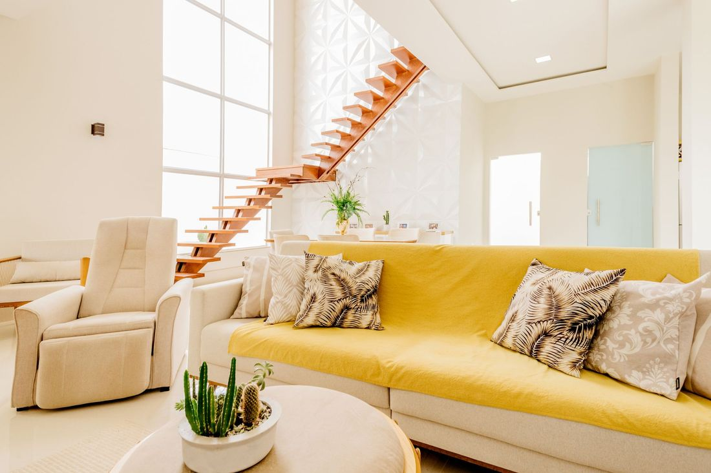
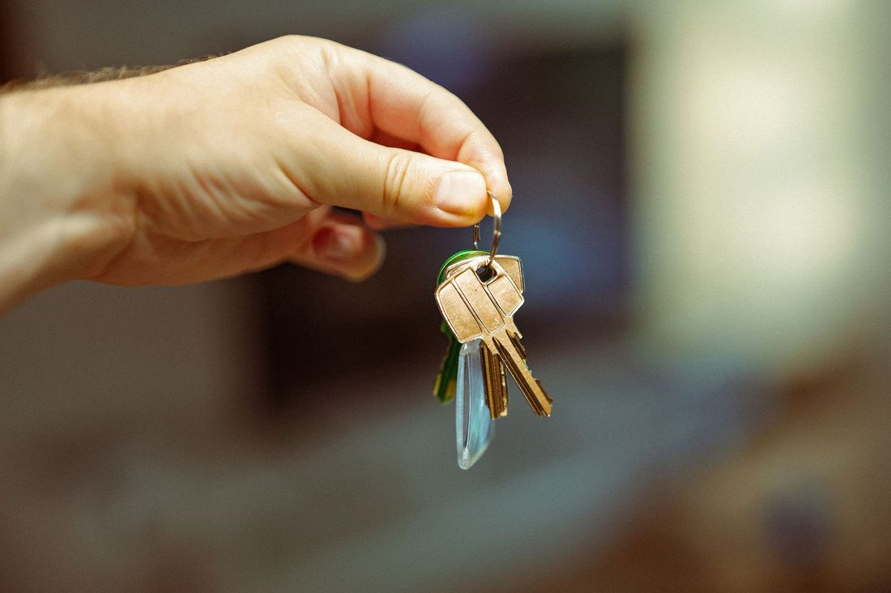
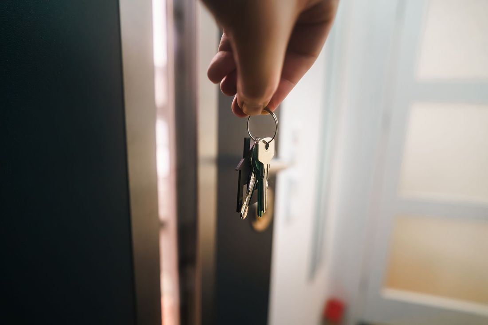
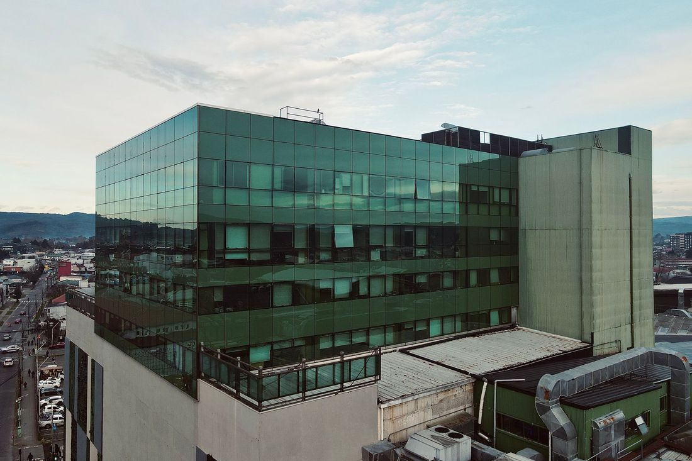

Konuttan arsaya tüm gayrimenkul ihtiyaçlarınız
Almak, satmak, kiralamak ya da yatırım yapmak isteyenler için süreci baştan sona birlikte yürütürüz.

SATILIKSatılık konut
Bütçenize, aile yapınıza ve ulaşım ihtiyacınıza uygun daireleri birlikte eleriz. Gezilecek ilanları önceden ayarlar, her evde dikkat edilecek noktaları anlatırız.
Görüşme KİRALIK
KİRALIKKiralık konut
Kira bütçenize ve yaşam tarzınıza uygun evleri listeler, görüşmeleri organize ederiz. Kira sözleşmesinden önce okumanız gereken maddeleri birlikte gözden geçiririz.
Görüşme
SATIŞEvinizi satalım
Mülkünüz için yetkilendirme sürecini baştan sona anlatır, ilan hazırlığından alıcı görüşmelerine kadar adımları planlarız. Evrakların eksiksiz olmasına yardımcı oluruz.
Görüşme
KİRA YÖNETİMİKiraya verme ve kiracı bulma
Evinizin kiraya hazırlığını, ilanını ve aday kiracı görüşmelerini yürütürüz. Sözleşme ve teslim tutanağı gibi belgelerde size yol gösteririz.
Görüşme DEĞERLEME
DEĞERLEMEDeğerleme ve ekspertiz yönlendirmesi
Satış ya da kredi için gereken değerleme raporu sürecini anlatır, yetkili kuruluşlara yönlendiririz. Piyasadaki benzer ilanları da karşılaştırmanız için sunarız.
GörüşmeTapu ve kredi süreç desteği
Tapu devri için gereken belgeleri ve randevu adımlarını baştan listeleriz. Konut kredisi başvurusunda hangi evrakın istendiğini önceden hatırlatırız.
Görüşme
TİCARİTicari gayrimenkul
Dükkân, ofis ve depo gibi ticari mülklerde alım, satım ve kiralama sürecinde destek veririz. İşinizin konum ve metrekare ihtiyacını birlikte netleştiririz.
Görüşme YATIRIM
YATIRIMArsa ve yatırım danışmanlığı
Arsa ve yatırımlık mülklerde imar, tapu kaydı ve çevre gibi bakılması gereken başlıkları sade biçimde anlatırız. Kararı sizin vermenize yardımcı olacak bilgiyi bir araya getiririz.
Görüşme YENİ PROJE
YENİ PROJEYeni proje ve konut projeleri
Yeni yapılan projelerde teslim tarihi, ödeme planı ve sözleşme maddelerini birlikte okuruz. Projeyi görmeden önce sorulacak soruları sizin için listeleriz.
Görüşme